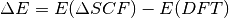

Conventional Delta-Self-Consistent-Field-DFT Calculations¶
Basics¶
In  SCF-DFT we calculate electronic excited states by assuming
a certain non-equilibrium orbital occupation and by self-consistently
solving the Kohn-Sham equations with this excited state population.
SCF-DFT we calculate electronic excited states by assuming
a certain non-equilibrium orbital occupation and by self-consistently
solving the Kohn-Sham equations with this excited state population.
The excitation energy is then simply the energy difference between
the ground state KS-DFT calculation and the SCF-DFT calculation:

We therefore need to perform two calculations, the ground state DFT calculation and the DeltaSCF calculation. For a more detailed explanation, see J. Chem. Phys. 135, 224303 (2011)
For the SCF calculation,
we have to add following keyword to <seed>.param
%BLOCK DEVEL_CODE
DeltaSCF
%ENDBLOCK DEVEL_CODE
and add following keyword in <seed>.deltascf
deltascf_mode : 1
Keywords allowed in <seed>.deltascf¶
In the .deltascf file, the keyword title plus colon takes exactly 23 columns (A20,3X). The keyword content starts after that. Lines with ‘#’ are ignored.
- WARNING
- The number of blanks between the keywords does count!! The best thing is to copy and modify the example from the manual.
| keyword | multiple appearance | arguments and FORTRAN format |
|---|---|---|
| deltascf_iprint | No | <integer I> |
| deltascf_mode | No | <integer I>, 1, 2, 3, or 4 |
| deltascf_constraint | Yes | <#state I5>1X<occ. F8.4>1X<spin I4><from I4><to I4> |
| overlap_cutoff | No | <float F8.4>, default: 0.01 |
| deltascf_smearing | No | <float F8.4>, default: 0.01 eV |
| deltascf_mixing | No | <float F8.4>, default: mix_charge_amp |
Example .deltascf file:
deltascf_mode : 1
deltascf_iprint : 1
# mode 1 constraints ##
# band occ spin from_band to_band
deltascf_constraint : 34 0.0000 1 34 34
deltascf_constraint : 35 1.0000 1 35 35
overlap_cutoff : 0.01
deltascf_smearing : 0.01
In this example, we enforce an occupation of 0.00 electrons in the electronic state 34, spin channel 1 and an occupation of 1.00 electrons in the electronic state 35, spin channel 1. the last two numbers in each line specify a window of states in which the corresponding state is searched if it changes its position between SCF cycles. In that way we can ensure that we constrain the correct state. deltascf_smearing is a mechanism which relaxes the constraints minimally to facilitate convergence. Sometimes, especially in the case of degenerate states, deltascf_smearing is necessary.
Example 1: Electronic excitations of the Azobenzene molecule¶
In this example we calculate the first two electronic excited states of E-Azobenzene in a supercell.
The required files are azo.cell, azo.param, azo.deltascf
azo.param
task: SinglePoint
%BLOCK DEVEL_CODE
DeltaSCF
%ENDBLOCK DEVEL_CODE
reuse: default
spin_polarized : False
cut_off_energy : 350.0
elec_energy_tol : 1e-07
fix_occupancy : False
iprint : 1
max_scf_cycles : 200
metals_method : dm
mixing_scheme : Pulay
nextra_bands : 10
num_dump_cycles : 0
opt_strategy_bias : 3
smearing_scheme : Gaussian
smearing_width : 0.1
xc_functional : PBE
azo.cell
%BLOCK LATTICE_CART
10.0000000 0.0000000000 0.0000000000
0.0000000000 20.0000000 0.0000000000
0.0000000000 0.0000000000 10.0000000000
%ENDBLOCK LATTICE_CART
%BLOCK POSITIONS_ABS
C -6.72081 -1.66625 0.00000
C -6.64967 -0.26964 0.00000
C -5.40647 0.36858 -0.00000
C -4.23175 -0.38857 -0.00000
C -4.29745 -1.78579 -0.00000
C -5.54882 -2.43430 -0.00000
H -7.68820 -2.15296 0.00000
H -7.55879 0.31772 0.00000
H -5.35348 1.44963 -0.00000
H -3.26966 0.10734 -0.00000
H -3.37789 -2.35693 -0.00000
N -5.65342 -3.85046 -0.00000
N -4.64259 -4.58194 -0.00000
C -4.75058 -5.99808 -0.00000
C -6.00434 -6.64214 -0.00000
C -6.07567 -8.03881 -0.00000
C -4.90409 -8.80053 -0.00000
C -3.65828 -8.16721 -0.00000
C -3.58139 -6.77065 -0.00000
H -2.61200 -6.28795 -0.00000
H -6.92178 -6.06761 -0.00000
H -7.03986 -8.53061 -0.00000
H -4.96168 -9.88134 -0.00000
H -2.75170 -8.75849 -0.00000
%ENDBLOCK POSITIONS_ABS
FIX_ALL_CELL : True
KPOINTS_MP_GRID : 1 1 1
azo.deltascf
deltascf_mode : 1
deltascf_iprint : 1
# mode 1 constraints ##
# band occ spin from_band to_band
deltascf_constraint : 34 0.5000 1 34 34
deltascf_constraint : 35 0.5000 1 35 35
We start by calculating the total DFT ground state energy as
Final energy, E = -2597.665647686 eV
Now we reuse the calculated wavefunctions and switch to the DeltaSCF calculation
%BLOCK DEVEL_CODE
DeltaSCF
%ENDBLOCK DEVEL_CODE
There are 68 valence electrons. Therefore, for this non-spin-polarized system the HOMO orbital is orbital no. 34. The LUMO is orbital no. 35.
The first two excited states of azobenzene are known to be S1(n->pi*) and S2(pi->pi*) transitions between the HOMO and LUMO and the HOMO-1 and the LUMO.
The corresponding constraint sequence in azo.deltascf for the S1 excitation is
deltascf_constraint : 34 0.5000 1 34 34
deltascf_constraint : 35 0.5000 1 35 35
- WARNING
- When running non-spin-polarized calculations, orbital occupations range from 0 to 1. !!When running a spin-polarized calculation, they also range from 0 to 1, although they contain 0 to 2 electrons. In this (non-spin-polarized) case, if we want to transfer an electron from the HOMO(34) to LUMO(35) we need to enforce the occupation of both to be 0.50.
Feel free to increase the print level with deltascf_iprint to study the output in more detail.
The corresponding total energy is
Final energy, E = -2595.702720896 eV
This corresponds to an S1 excitation energy of 1.96 eV.
The constraint sequence for an S2 excitation is
deltascf_constraint : 33 0.5000 1 33 33
deltascf_constraint : 35 0.5000 1 35 35
The resulting final energy is
Final energy, E = -2594.762182241 eV
The corresponding S2 excitation energy is 2.90 eV.